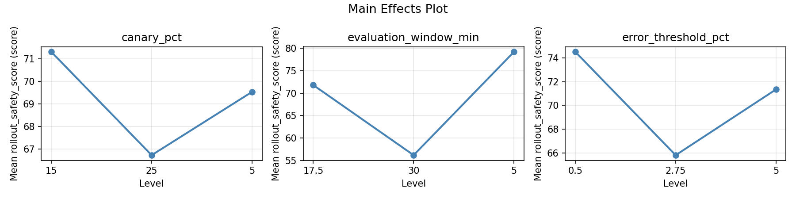
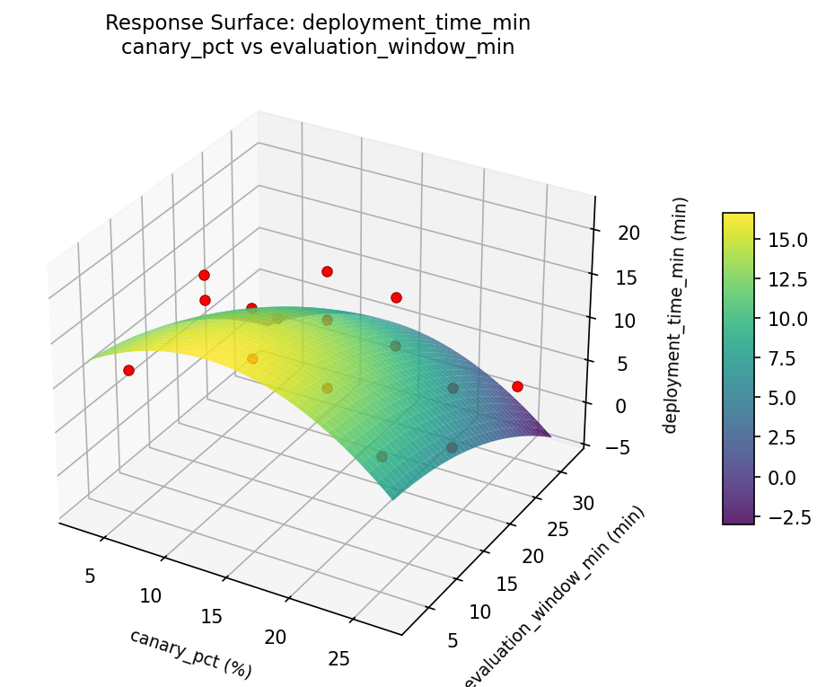
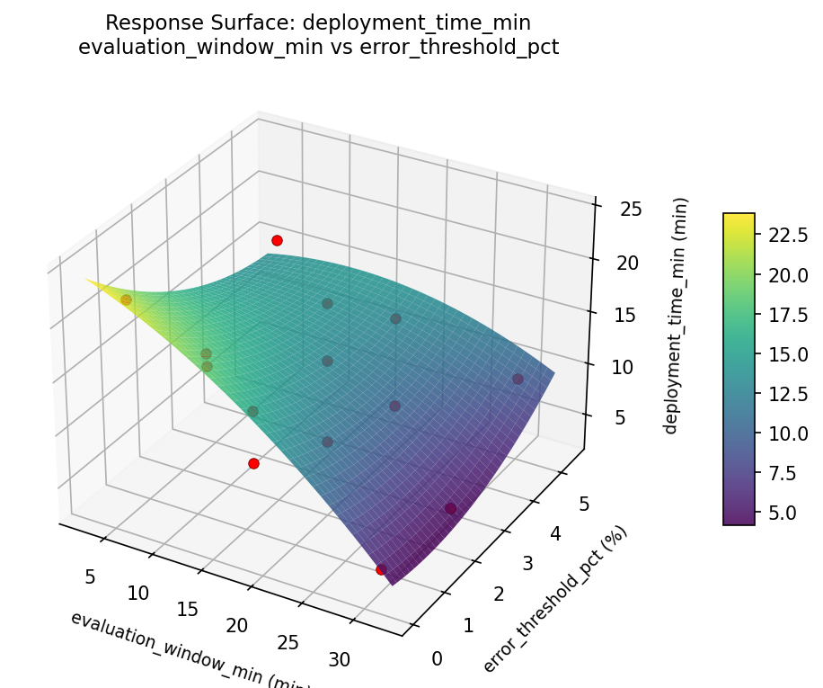
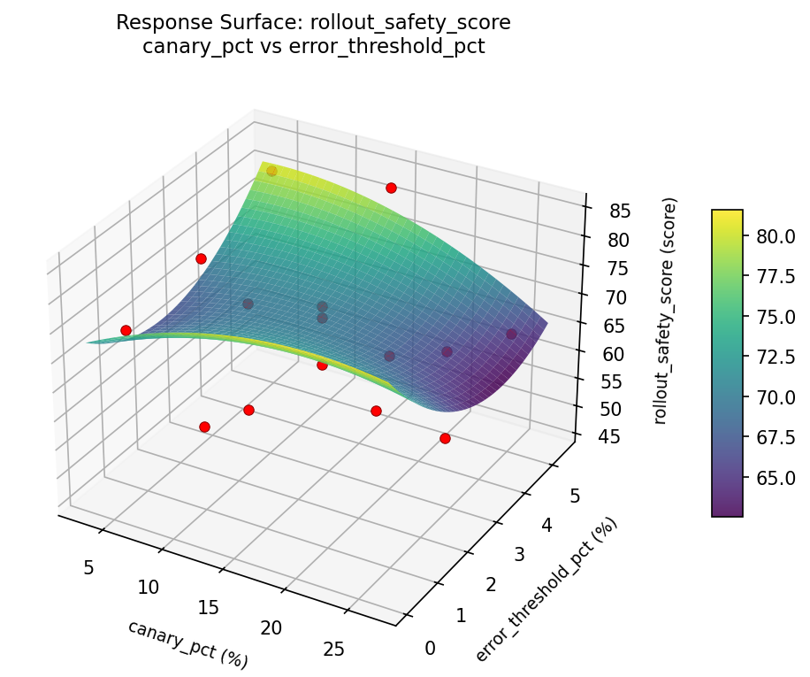

Summary
This experiment investigates deployment canary rollout. Box-Behnken design to tune canary percentage, evaluation window, and error threshold for rollout safety.
The design varies 3 factors: canary pct (%), ranging from 5 to 25, evaluation window min (min), ranging from 5 to 30, and error threshold pct (%), ranging from 0.5 to 5.0. The goal is to optimize 2 responses: rollout safety score (score) (maximize) and deployment time min (min) (minimize). Fixed conditions held constant across all runs include orchestrator = kubernetes, strategy = canary.
A Box-Behnken design was chosen because it efficiently fits quadratic models with 3 continuous factors while avoiding extreme corner combinations — requiring only 15 runs instead of the 8 needed for a full factorial at two levels.
Quadratic response surface models were fitted to capture potential curvature and factor interactions. The RSM contour plots below visualize how pairs of factors jointly affect each response.
Key Findings
For rollout safety score, the most influential factors were error threshold pct (60.4%), evaluation window min (24.5%), canary pct (15.2%). The best observed value was 84.4 (at canary pct = 15, evaluation window min = 17.5, error threshold pct = 2.75).
For deployment time min, the most influential factors were error threshold pct (41.7%), canary pct (34.7%), evaluation window min (23.6%). The best observed value was 3.1 (at canary pct = 5, evaluation window min = 5, error threshold pct = 2.75).
Recommended Next Steps
- Run confirmation experiments at the predicted optimal settings to validate the model.
- Consider whether any fixed factors should be varied in a future study.
Experimental Setup
Factors
| Factor | Low | High | Unit |
|---|
canary_pct | 5 | 25 | % |
evaluation_window_min | 5 | 30 | min |
error_threshold_pct | 0.5 | 5.0 | % |
Fixed: orchestrator = kubernetes, strategy = canary
Responses
| Response | Direction | Unit |
|---|
rollout_safety_score | ↑ maximize | score |
deployment_time_min | ↓ minimize | min |
Configuration
{
"metadata": {
"name": "Deployment Canary Rollout",
"description": "Box-Behnken design to tune canary percentage, evaluation window, and error threshold for rollout safety"
},
"factors": [
{
"name": "canary_pct",
"levels": [
"5",
"25"
],
"type": "continuous",
"unit": "%"
},
{
"name": "evaluation_window_min",
"levels": [
"5",
"30"
],
"type": "continuous",
"unit": "min"
},
{
"name": "error_threshold_pct",
"levels": [
"0.5",
"5.0"
],
"type": "continuous",
"unit": "%"
}
],
"fixed_factors": {
"orchestrator": "kubernetes",
"strategy": "canary"
},
"responses": [
{
"name": "rollout_safety_score",
"optimize": "maximize",
"unit": "score"
},
{
"name": "deployment_time_min",
"optimize": "minimize",
"unit": "min"
}
],
"settings": {
"operation": "box_behnken",
"test_script": "use_cases/78_deployment_canary_rollout/sim.sh"
}
}
Experimental Matrix
The Box-Behnken Design produces 15 runs. Each row is one experiment with specific factor settings.
| Run | canary_pct | evaluation_window_min | error_threshold_pct |
|---|
| 1 | 15 | 5 | 0.5 |
| 2 | 15 | 17.5 | 2.75 |
| 3 | 25 | 17.5 | 5 |
| 4 | 25 | 17.5 | 0.5 |
| 5 | 15 | 17.5 | 2.75 |
| 6 | 15 | 17.5 | 2.75 |
| 7 | 5 | 17.5 | 5 |
| 8 | 25 | 5 | 2.75 |
| 9 | 15 | 5 | 5 |
| 10 | 25 | 30 | 2.75 |
| 11 | 5 | 17.5 | 0.5 |
| 12 | 15 | 30 | 5 |
| 13 | 5 | 5 | 2.75 |
| 14 | 5 | 30 | 2.75 |
| 15 | 15 | 30 | 0.5 |
Step-by-Step Workflow
1
Preview the design
$ python doe.py info --config use_cases/78_deployment_canary_rollout/config.json
2
Generate the runner script
$ python doe.py generate --config use_cases/78_deployment_canary_rollout/config.json \
--output use_cases/78_deployment_canary_rollout/results/run.sh --seed 42
3
Execute the experiments
$ bash use_cases/78_deployment_canary_rollout/results/run.sh
4
Analyze results
$ python doe.py analyze --config use_cases/78_deployment_canary_rollout/config.json
5
Get optimization recommendations
$ python doe.py optimize --config use_cases/78_deployment_canary_rollout/config.json
6
Multi-objective optimization
With 2 competing responses, use --multi to find the best compromise via Derringer–Suich desirability.
$ python doe.py optimize --config use_cases/78_deployment_canary_rollout/config.json --multi
7
Generate the HTML report
$ python doe.py report --config use_cases/78_deployment_canary_rollout/config.json \
--output use_cases/78_deployment_canary_rollout/results/report.html
Features Exercised
| Feature | Value |
|---|
| Design type | box_behnken |
| Factor types | continuous (all 3) |
| Arg style | double-dash |
| Responses | 2 (rollout_safety_score ↑, deployment_time_min ↓) |
| Total runs | 15 |
Analysis Results
Generated from actual experiment runs using the DOE Helper Tool.
Response: rollout_safety_score
Top factors: error_threshold_pct (60.4%), evaluation_window_min (24.5%), canary_pct (15.2%).
Pareto Chart

Main Effects Plot

Response: deployment_time_min
Top factors: error_threshold_pct (41.7%), canary_pct (34.7%), evaluation_window_min (23.6%).
Pareto Chart

Main Effects Plot

Response Surface Plots
3D surfaces fitted with quadratic RSM. Red dots are observed data points.
deployment time min canary pct vs error threshold pct

deployment time min canary pct vs evaluation window min

deployment time min evaluation window min vs error threshold pct

rollout safety score canary pct vs error threshold pct

rollout safety score canary pct vs evaluation window min

rollout safety score evaluation window min vs error threshold pct

Multi-Objective Optimization
When responses compete, Derringer–Suich desirability finds the best compromise.
Each response is scaled to a 0–1 desirability, then combined via a weighted geometric mean.
Overall Desirability
D = 0.7464
Per-Response Desirability
| Response | Weight | Desirability | Predicted | Dir |
|---|
rollout_safety_score |
2.0 |
|
81.80 0.8927 81.80 score |
↑ |
deployment_time_min |
1.0 |
|
12.00 0.5219 12.00 min |
↓ |
Recommended Settings
| Factor | Value |
|---|
canary_pct | 5 % |
evaluation_window_min | 17.5 min |
error_threshold_pct | 0.5 % |
Source: from observed run #4
Trade-off Summary
Sacrifice = how much worse than single-objective best.
| Response | Predicted | Best Observed | Sacrifice |
|---|
deployment_time_min | 12.00 | 3.10 | +8.90 |
Top 3 Runs by Desirability
| Run | D | Factor Settings |
|---|
| #11 | 0.7374 | canary_pct=15, evaluation_window_min=5, error_threshold_pct=5 |
| #2 | 0.6889 | canary_pct=5, evaluation_window_min=30, error_threshold_pct=2.75 |
Model Quality
| Response | R² | Type |
|---|
deployment_time_min | 0.2901 | linear |
Full Multi-Objective Output
============================================================
MULTI-OBJECTIVE OPTIMIZATION
Method: Derringer-Suich Desirability Function
============================================================
Overall desirability: D = 0.7464
Response Weight Desirability Predicted Direction
---------------------------------------------------------------------
rollout_safety_score 2.0 0.8927 81.80 score ↑
deployment_time_min 1.0 0.5219 12.00 min ↓
Recommended settings:
canary_pct = 5 %
evaluation_window_min = 17.5 min
error_threshold_pct = 0.5 %
(from observed run #4)
Trade-off summary:
rollout_safety_score: 81.80 (best observed: 84.40, sacrifice: +2.60)
deployment_time_min: 12.00 (best observed: 3.10, sacrifice: +8.90)
Model quality:
rollout_safety_score: R² = 0.0847 (linear)
deployment_time_min: R² = 0.2901 (linear)
Top 3 observed runs by overall desirability:
1. Run #4 (D=0.7464): canary_pct=5, evaluation_window_min=17.5, error_threshold_pct=0.5
2. Run #11 (D=0.7374): canary_pct=15, evaluation_window_min=5, error_threshold_pct=5
3. Run #2 (D=0.6889): canary_pct=5, evaluation_window_min=30, error_threshold_pct=2.75
Full Analysis Output
=== Main Effects: rollout_safety_score ===
Factor Effect Std Error % Contribution
--------------------------------------------------------------
error_threshold_pct 15.3000 2.8303 60.4%
evaluation_window_min 6.1964 2.8303 24.5%
canary_pct 3.8464 2.8303 15.2%
=== ANOVA Table: rollout_safety_score ===
Source DF SS MS F p-value
-----------------------------------------------------------------------------
canary_pct 2 50.8775 25.4388 0.132 0.8782
evaluation_window_min 2 133.0175 66.5088 0.345 0.7181
error_threshold_pct 2 493.1408 246.5704 1.280 0.3294
Lack of Fit 6 619.9535 103.3256 0.536 0.7654
Pure Error 2 385.2800 192.6400
Error 8 1005.2335 192.6400
Total 14 1682.2693 120.1621
=== Summary Statistics: rollout_safety_score ===
canary_pct:
Level N Mean Std Min Max
------------------------------------------------------------
15 7 71.5714 11.5115 54.6000 84.4000
25 4 68.0500 4.5273 63.6000 72.1000
5 4 67.7250 16.0708 46.2000 84.3000
evaluation_window_min:
Level N Mean Std Min Max
------------------------------------------------------------
17.5 7 66.4286 12.3936 46.2000 81.8000
30 4 72.6250 13.8899 57.1000 84.4000
5 4 72.1500 4.0353 66.7000 76.1000
error_threshold_pct:
Level N Mean Std Min Max
------------------------------------------------------------
0.5 4 60.7500 12.5003 46.2000 76.1000
2.75 7 70.9857 10.2087 54.6000 84.3000
5 4 76.0500 5.6288 72.1000 84.4000
=== Main Effects: deployment_time_min ===
Factor Effect Std Error % Contribution
--------------------------------------------------------------
error_threshold_pct 5.3750 1.5394 41.7%
canary_pct 4.4714 1.5394 34.7%
evaluation_window_min 3.0429 1.5394 23.6%
=== ANOVA Table: deployment_time_min ===
Source DF SS MS F p-value
-----------------------------------------------------------------------------
canary_pct 2 56.0782 28.0391 16.461 0.0015
evaluation_window_min 2 25.8729 12.9364 7.595 0.0142
error_threshold_pct 2 57.9125 28.9563 17.000 0.0013
Lack of Fit 6 354.3498 59.0583 34.672 0.0283
Pure Error 2 3.4067 1.7033
Error 8 357.7564 1.7033
Total 14 497.6200 35.5443
=== Summary Statistics: deployment_time_min ===
canary_pct:
Level N Mean Std Min Max
------------------------------------------------------------
15 7 11.7714 5.6885 3.1000 21.8000
25 4 11.4750 6.6515 3.3000 19.1000
5 4 7.3000 6.1822 3.1000 16.4000
evaluation_window_min:
Level N Mean Std Min Max
------------------------------------------------------------
17.5 7 9.1571 3.5925 3.1000 13.7000
30 4 11.1500 9.4412 3.1000 21.8000
5 4 12.2000 6.5038 3.8000 19.1000
error_threshold_pct:
Level N Mean Std Min Max
------------------------------------------------------------
0.5 4 7.7250 5.4531 3.1000 13.7000
2.75 7 10.6000 5.8997 3.3000 19.1000
5 4 13.1000 6.8717 5.9000 21.8000
Optimization Recommendations
=== Optimization: rollout_safety_score ===
Direction: maximize
Best observed run: #10
canary_pct = 15
evaluation_window_min = 17.5
error_threshold_pct = 2.75
Value: 84.4
RSM Model (linear, R² = 0.6094, Adj R² = 0.5029):
Coefficients:
intercept +69.6067
canary_pct +6.4875
evaluation_window_min +8.0125
error_threshold_pct -4.6750
RSM Model (quadratic, R² = 0.6934, Adj R² = 0.1415):
Coefficients:
intercept +71.1000
canary_pct +6.4875
evaluation_window_min +8.0125
error_threshold_pct -4.6750
canary_pct*evaluation_window_min -4.0500
canary_pct*error_threshold_pct -2.6250
evaluation_window_min*error_threshold_pct +2.4250
canary_pct^2 -2.3250
evaluation_window_min^2 +0.5250
error_threshold_pct^2 -1.0000
Curvature analysis:
canary_pct coef=-2.3250 concave (has a maximum)
error_threshold_pct coef=-1.0000 concave (has a maximum)
evaluation_window_min coef=+0.5250 convex (has a minimum)
Notable interactions:
canary_pct*evaluation_window_min coef=-4.0500 (antagonistic)
canary_pct*error_threshold_pct coef=-2.6250 (antagonistic)
evaluation_window_min*error_threshold_pct coef=+2.4250 (synergistic)
Predicted optimum (from linear model, at observed points):
canary_pct = 25
evaluation_window_min = 30
error_threshold_pct = 2.75
Predicted value: 84.1067
Surface optimum (via L-BFGS-B, linear model):
canary_pct = 25
evaluation_window_min = 30
error_threshold_pct = 0.5
Predicted value: 88.7817
Model quality: Moderate fit — use predictions directionally, not precisely.
Factor importance:
1. evaluation_window_min (effect: 16.0, contribution: 41.8%)
2. canary_pct (effect: 13.0, contribution: 33.8%)
3. error_threshold_pct (effect: 9.3, contribution: 24.4%)
=== Optimization: deployment_time_min ===
Direction: minimize
Best observed run: #9
canary_pct = 5
evaluation_window_min = 5
error_threshold_pct = 2.75
Value: 3.1
RSM Model (linear, R² = 0.2289, Adj R² = 0.0186):
Coefficients:
intercept +10.5000
canary_pct +1.9125
evaluation_window_min +0.8125
error_threshold_pct -3.1500
RSM Model (quadratic, R² = 0.4324, Adj R² = -0.5893):
Coefficients:
intercept +14.6667
canary_pct +1.9125
evaluation_window_min +0.8125
error_threshold_pct -3.1500
canary_pct*evaluation_window_min +0.8750
canary_pct*error_threshold_pct +0.8000
evaluation_window_min*error_threshold_pct +0.8000
canary_pct^2 -4.6958
evaluation_window_min^2 -1.0958
error_threshold_pct^2 -2.0208
Curvature analysis:
canary_pct coef=-4.6958 concave (has a maximum)
error_threshold_pct coef=-2.0208 concave (has a maximum)
evaluation_window_min coef=-1.0958 concave (has a maximum)
Notable interactions:
canary_pct*evaluation_window_min coef=+0.8750 (synergistic)
evaluation_window_min*error_threshold_pct coef=+0.8000 (synergistic)
canary_pct*error_threshold_pct coef=+0.8000 (synergistic)
Predicted optimum (from linear model, at observed points):
canary_pct = 25
evaluation_window_min = 17.5
error_threshold_pct = 0.5
Predicted value: 15.5625
Surface optimum (via L-BFGS-B, linear model):
canary_pct = 5
evaluation_window_min = 5
error_threshold_pct = 5
Predicted value: 4.6250
Model quality: Weak fit — consider adding center points or using a different design.
Factor importance:
1. canary_pct (effect: 6.4, contribution: 44.6%)
2. error_threshold_pct (effect: 6.3, contribution: 44.0%)
3. evaluation_window_min (effect: 1.6, contribution: 11.4%)